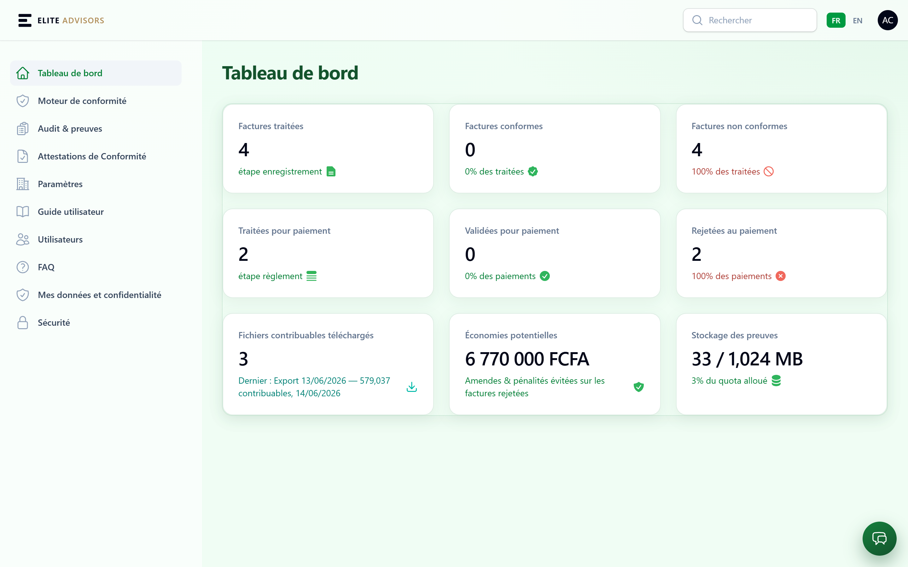
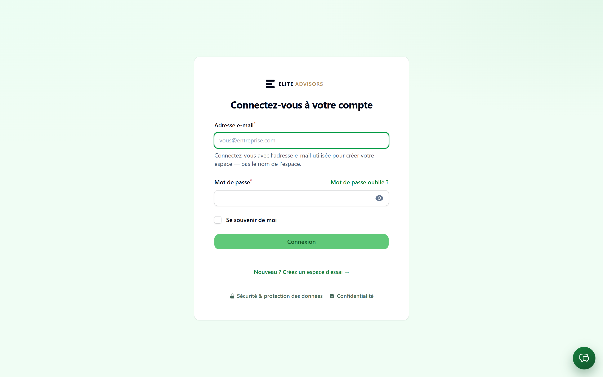

ELITE
ADVISORS
Academy
FR
EN
1
2
3
4
33%
+16,5%
= 49,5%
①
②
③
④

Tableau de bord
—
Moteur de conformité
—
Attestations de Conformité
—
Audit & preuves
—
3 300 000
1 650 000
1 925 000
≈ 6 875 000 FCFA
FCFA
✓
⏱

Espace client
—
🛡
🔒
🔐